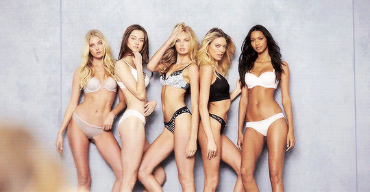

One Size Fits All
Make-up has no size
This section of our website was made to show all women of any color, race, age and shape can wear make-up. Make-up has no size meaning that anyone can wear it! Make-up is an empowering tool used to help enhance the natural beauty of any woman. Make-up is used as any other accessory that can help a woman express herself. with a make-up brush any woman can become and artist! So-o-o many women are insecure about themselves and make-up can be used to enhance the parts of there face that they had no idea was there to begin with. All women are pretty but beauty is what they do with it. Women spend to much time on worrying why they are not good enough but they do not spend enough time focusing on the good parts about themselves. You are beautiful, believe it! Have more confidence! Beauty is a one size fits all!
Many brands and companies are known for there models with perfectly symmetrical faces. These models lead to a nonrealistic image of what beauty actually is. These companies have big influence on many women but especially adolecent girls. Adolecent girls or teenage girls often get influenced by big companies like Victoria's Secret, girls look at there pictures and ads everywhere. Since these girls see the models everywhere they get influenced and think that they should have a perfect and symmetrical face like a model to be beautiful. Although these models are in reality beautiful it doesn't mean that a model's beauty is the only type of beauty that exists. Many girls fail to understand that, model's get pounds of makeup on ther faces and often times get photoshopped. Even these models can't achive this look by themselves, what a models shows in a magazine or on media is all artificial beauty

Although there are many companies that depict a nonrealistic beauty image, there are many others that aren't. Companies like true match and other various makeup brands are widely spreading the variety of textures, coverage, and tones that will work with many skin tones and types.
Makeup is a One size fits all!! Anyone should be able to and should enjoy the art of makeup! Who wouldn't want to look feirce? Go out there and own it!